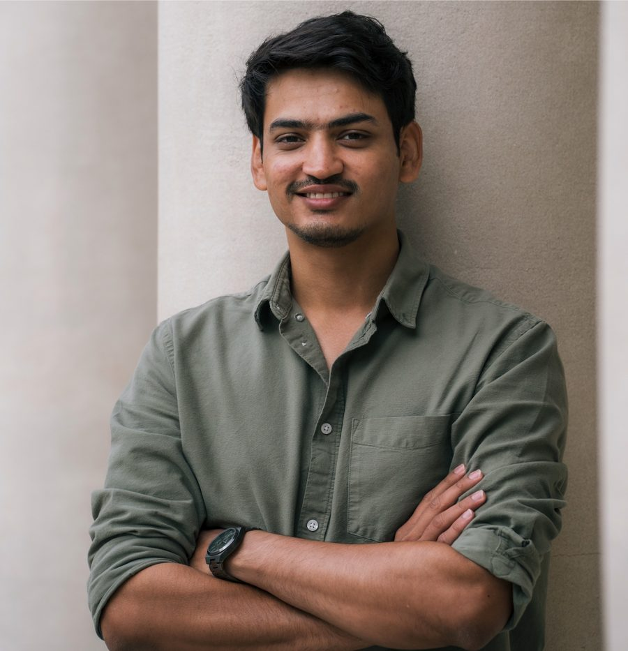

I work at the intersection of AI safety and applied machine learning — focused on making large language models more reliable and trustworthy in high-stakes domains like healthcare. My expertise spans hallucination detection, uncertainty quantification, and bias evaluation, grounded in a PhD from Johns Hopkins.

Career
One of the founding scientists of CVS Health's enterprise AI Research program. I build in-house AI safety tooling for evaluating hallucinations, bias, and uncertainty in production LLM systems, co-author research papers, and contribute to enterprise-wide AI safety toolkits.
Led software development of UQpy, a Python toolbox for uncertainty quantification with 100,000+ downloads. Developed novel Bayesian Optimization algorithms for Global Sensitivity Analysis and pioneered ML-guided large-scale wind tunnel experiments at the University of Florida.
Designed and implemented ML models on projects from global organizations. Built a CNN-based page-flip detection model achieving 93% classification accuracy, deployed via Flask, with performance improvements using Grad-CAM analysis.
Open Source
Uncertainty Quantification for Language Models — black-box, white-box, LLM Judge & ensemble hallucination detection. Adopted enterprise-wide at CVS Health.
Python package for assessing bias & fairness in LLM use cases. Adopted by CHAI as a Responsible AI industry standard. Integrated with the LangChain ecosystem.
Powerful Python toolbox for modeling uncertainty in physical and mathematical systems. Features GaussianProcessRegression and AdaptiveKriging for Monte Carlo frameworks.
Research
Academic Background
Let's Connect
Interested in AI safety, LLM evaluation, uncertainty quantification, or responsible AI in healthcare? Let's talk.